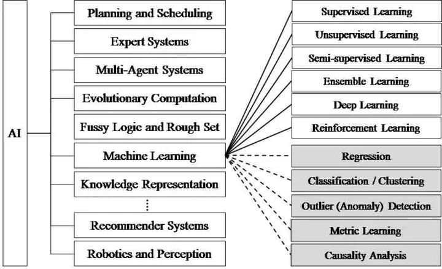

人工智能的浪潮正在席卷全球。
2016年，谷歌阿尔法围棋以 4:1 战胜围棋世界冠军、职业九段棋手李世石，不仅让深度学习为人们所知，而且掀起了人工智能的“大众热”。随之也产生了一些学术名词如：人工智能（Artificial Intelligence, AI）、机器学习（Machine Learning, ML）、深度学习（Deep Learning, DL）、强化学习（Reinforcement Learning, RL）等，很多人分不清他们彼此之间的关系。

简单说，人工智能范围最大，涵盖机器学习、深度学习和强化学习。机器学习是一种实现人工智能的方法，深度学习和强化学习都是实现机器学习的技术。
机器学习之父 Tom Mitchell 如此定义机器学习：“每个机器学习都可以被精准地定义为：1.任务 T；2.训练过程 E；3.模型表现 P。而学习过程则可以被拆解为为了实现任务 T，我们通过训练 E，逐步提高表现 P 的一个过程“。深度学习是用于建立、模拟人脑进行分析学习的神经网络，并模仿人脑的机制来解释数据的一种机器学习技术。强化学习用于描述和解决智能体在与环境的交互过程中通过学习策略以达成回报最大化或实现特定目标的问题。